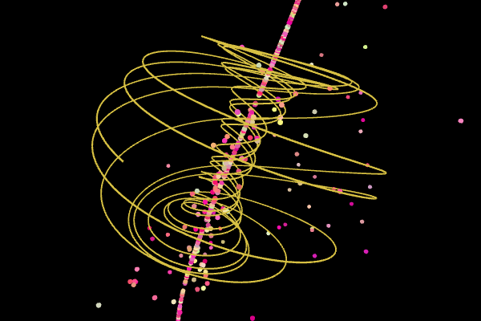
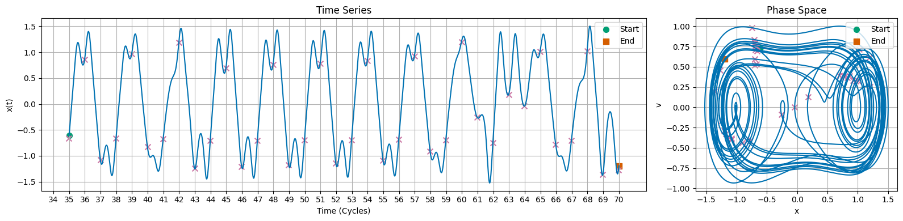
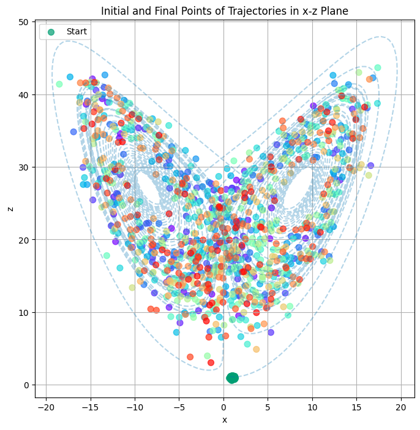
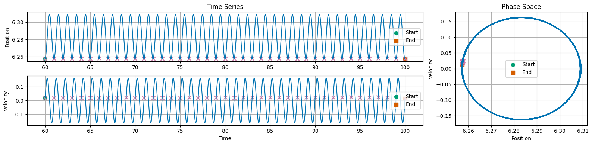

Day 26 - Introduction to Chaos#

Sprott Attractor#
Announcements#
Midterm 1 is graded
Feedback delivered for project
Homework 7 is due Friday
No homework next week
Midterm 2 will be assigned next Monday (due 14 November)
Second project check-in
Seminars This Week#
MONDAY, October 27, 2025#
Condensed Matter Seminar 4:10 pm,1400 BPS, In Person and Zoom, Host ~ Tyler Cocker
Speaker: Elad Harel, MSU
Title: Optical Pulse Trains-From Tracking Viruses to Directing Material Synthesis
Zoom Link: https://msu.zoom.us/j/93613644939
Meeting ID: 936 1364 4939
Password: CMP
Seminars This Week#
TUESDAY, October 28, 2025#
Theory Seminar, 11:00am., FRIB 1200 lab, In person and online via Zoom Speaker: Antonio Bjelcic, LLNL Title: Small and Large Amplitude Collective Dynamics within Nuclear Density Functional Theory Zoom Link: 964 7281 4717 Meeting ID: 48824
Seminars This Week#
TUESDAY, October 28, 2025#
High Energy Physics Seminar, 1:30 pm, 1400 BPS, Host~ Joey Huston
Speaker: Tanishq Sharma, MSU
Title: “Towards next-gen parton distribution and fragmentation functions”
Zoom:
Passcode:
(Joining the Zoom meeting requires a password. Please contact one of the organizers, if you haven’t received it.)
Organized by: Joey Huston, Sophie Berkman and Brenda Wenzlick
Seminars This Week#
WEDNESDAY, October 29, 2025#
Astronomy Seminar, 1:30 pm, 1400 BPS, In Person and Zoom, Host~ Speaker: Michael Radic, University of Chicago Title: Zoom Link: https://msu.zoom.us/j/93334479606?pwd=OtIXPWhRPBfzYu53sl3trSJlaBYI7C.1 Meeting ID: 933 3447 9606 Passcode: 825824
Seminars This Week#
WEDNESDAY, October 29, 2025#
PER (Physics Education Research Seminar), 3:00 pm., BPS 1400 in person and zoom Speaker: Eric Burkholder, Assistant Professor at Auburn University Title: Could we make physics more accessible by teaching real physics? Zoom Link: https://msu.zoom.us/j/96470703707 Meeting ID: 964 7070 3707 Passcode: PERSeminar
Seminars This Week#
WEDNESDAY, October 29, 2025#
FRIB Nuclear Science Seminar, 3:30pm., FRIB 1300 Auditorium and online via Zoom Speaker: Professor Dien Nguyen of the University of Tennessee, Knoxville Title: The Pairing Mechanism of Short Range Correlations and the impact of Nuclear Structure Please click the link below to join the webinar: Join Zoom Meeting: https://msu.zoom.us/j/93944167137?pwd=jzvwvbL8YqDnJNpzDPat8IHcrFdtC5.1 Meeting ID: 939 4416 7137 Passcode: 239049
What is Chaos?#
At your table, discuss what it means for a system to be chaotic.
What are some examples of chaotic systems?
What are some characteristics of chaotic systems?
How do chaotic systems differ from non-chaotic systems?
Try to come up with two answers to each question to share.
Hallmarks of a Classically Chaotic System#
Deterministic: The system is governed by deterministic laws (e.g., Newton’s laws of motion, a set of differential equations)
Sensitive to Initial Conditions: A bundle of trajectories that start close together will diverge exponentially over time
Non-periodic Behavior: The system exhibist s complex, non-repeating behavior over time, this might look like “random” behavior, but it is not truly random because it is deterministic
Hallmarks of a Classically Chaotic System#
Strange Attractors: The system may have a strange attractor, which is a fractal structure in phase space that the system tends to evolve towards over time
Parameter Sensitivity: The system may be sensitive to small changes in parameters, which can trigger qualitative changes in the system’s behavior
(Sometimes) Periodic Behavior: The system may exhibit periodic behavior for certain parameter values, and this might be a signal that the system bifurcates into chaotic behavior for other parameter values
Example 1: Duffing Equation#

Exhibits Periodic and Chaotic Behavior
Illustrates period doubling bifurcations as route to chaos
Example 2: Lorenz System#

Exhibits sensitive dependence on initial conditions Demonstrates the concept of a strange attractor
Using solve_ivp#
We will start with the damped driven pendulum as an example. This will illustrate how to use solve_ivp to solve a system of coupled first-order differential equations.
We can rewrite this as two first-order equations:
Using solve_ivp#
To use solve_ivp, we write a function for the derivatives:
def damped_driven_pendulum(t, y, beta, A, omegaD=1):
theta, omega = y
dtheta_dt = omega
domega_dt = -np.sin(theta) - beta * omega + A * np.cos(omegaD*t)
return [dtheta_dt, domega_dt]
Using solve_ivp#
Now we can use solve_ivp to solve the system of equations:
# Parameters that define the system
beta = 0.5
A = 1.0
omegaD = 2*np.pi
# Time span for the simulation
t_span = (0, 100)
# Initial conditions: [theta, omega]
y0 = [6, 0]
# Time points where we want the solution
t_eval = np.linspace(t_span[0], t_span[1], 10000)
# Solve the system of equations
solution = solve_ivp(damped_driven_pendulum, t_span, y0, args=(beta, A, omegaD), t_eval=t_eval)
Damped Driven Pendulum#
Long Term Behavior is Periodic

“Period-1” Dynamics is a term to indicate there’s a single frequency governing the motion
Phase space plots can provide a better window into the system’s behavior